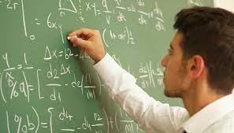

Bacharelado em Física

O bacharelado em física é voltado para quem deseja uma formação mais ampla na área, com ênfase em pesquisa e desenvolvimento científico. Os alunos aprendem sobre teorias fundamentais da física e suas aplicações em diversas áreas, como astrofísica, física quântica, eletromagnetismo, entre outros.
- Principais disciplinas:
- -Mecânica Clássica
- -Física Moderna
- -Termodinâmica e Física Estatística
- -Física Computacional
Licenciatura em Física
A licenciatura em física é direcionada para quem pretende seguir a carreira acadêmica, atuando como professor de física no ensino fundamental e médio. Além das disciplinas de física, os alunos estudam metodologias de ensino, didática, psicologia da aprendizagem e práticas pedagógicas.
- Principais disciplinas:
- -Didática da Física
- -Psicologia da Aprendizagem
- -Metodologias de Ensino em Física
- -Estágio Supervisionado